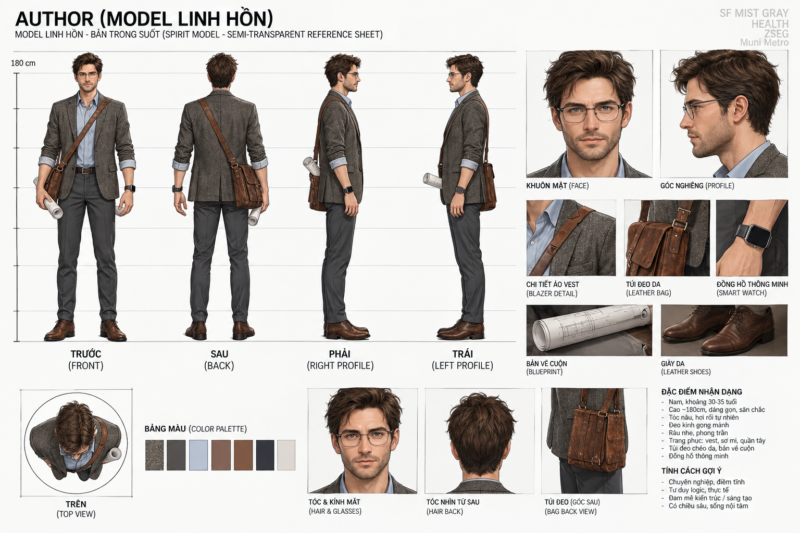
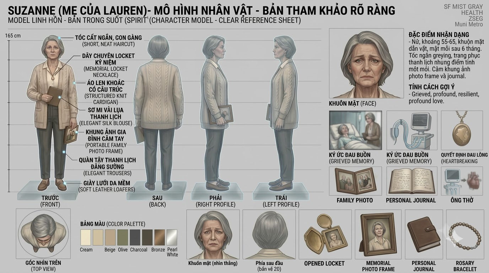

Character System · Profiles · Character Sheet · Visual Direction
3.1. HỆ THỐNG NHÂN VẬT
| Nhóm | Nhân vật | Vai trò | Tác dụng Gameplay |
|---|---|---|---|
| Playable | Arthur Pendleton | Kiến trúc sư · Thực thể sống | Tương tác vật lý, Stealth, giải đố không gian, lái xe, đọc bản vẽ. |
| Playable | Lauren Kline | Bác sĩ · Thực thể tâm linh | Phasing, làm nhiễu thiết bị điện, soi ký ức, phát sáng. |
| Support NPC | Paul Pendleton | Bạn thân và đối tác kiến trúc | Thiết bị hỗ trợ điều tra, phương án hành động, dẫn đường kỹ thuật. |
| Support NPC | Suzanne | Mẹ của Lauren | Điểm mấu chốt Narrative, xung đột tình cảm và Time Pressure. |
| Antagonist NPC | Thanh tra Pilguez | Đối thủ điều tra | Stealth, manh mối và áp lực đuổi bắt. |
| Environment NPC | Đội ngũ y khoa & bảo vệ | NPC tuần tra tại Memorial | Tạo áp lực phát hiện và chướng ngại Stealth. |
3.2. ARTHUR PENDLETON — THE LIVING

Shape: Architectural Lines, hình khối vuông vức, chắc chắn.
Visual: nâu tweed, earth tone, vật liệu gỗ/gạch.
Mục tiêu: giải mã tai nạn, cứu Lauren trước 72 giờ, tăng Hope Level.
Xung đột: tình cảm và hy vọng đối đầu áp lực điều tra, bệnh viện.
3.2. LAUREN KLINE — THE SPIRIT


Shape: Fluid Forms, mềm, nhẹ, không ổn định.
Visual: Cyan Glow, bán trong suốt.
Mục tiêu: mở khóa Memory Shards, duy trì Hope Level, truyền đạt tâm nguyện.
Xung đột: sống/chết trong Timer 72h và năng lượng tâm linh suy yếu.
PAUL PENDLETON — THE TECHNICIAN

Thực tế, tháo vát, logic, đáng tin cậy; hỗ trợ thiết bị, kế hoạch và liên lạc.
SUZANNE — THE MOTHER

Mẹ của Lauren; đại diện tình mẫu tử, hy vọng và quyết định liên quan thiết bị duy trì sự sống.
THANH TRA PILGUEZ — THE HUNTER

Lão luyện, sắc bén, nghiêm nghị; là chướng ngại Stealth và lực lượng điều tra bám theo Arthur.
3.3. CHARACTER SHEET
Arthur: tư liệu hình ảnh hiện có phục vụ tham chiếu tạo hình.
Lauren: hai trạng thái hình ảnh — linh hồn và thực thể.
Yêu cầu báo cáo: Front / Side / Back, biểu cảm, Pose / Action, trang phục / đạo cụ. Các sheet góc nhìn đầy đủ có thể bổ sung sau.
3.4. ĐỊNH HƯỚNG TẠO HÌNH
- Arthur: khối chắc, đường nét kiến trúc, Warm Tweed & Earth Tones.
- Lauren: Fluid Forms, Cyan Glow, ether bán trong suốt / glitched.
- Environment: Victorian cổ điển ↔ bệnh viện hiện đại.
- Lighting: tương phản ấm/lạnh, sương và volumetric light.